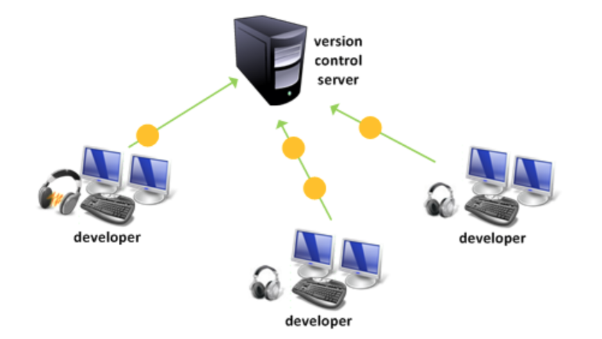
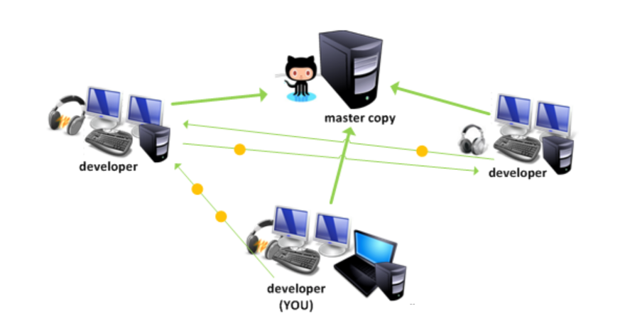

Systemy Kontroli Wersji
SCM (Source Code Management) to zestaw narzędzi i procesów mających na celu ustandaryzowanie wersjonowania treści tworzonych, modyfikowanych i usuwanych w ramach danego projektu.
VCS (Version Control System) to narzędzie do zarządzania wersjonowaniem naszego projektu.
Modele SCM
Na rynku obecnie istnieją dwa wiodące modele wersjonowania treści:
- scentralizowany

- zdecentralizowany

Popularne systemy kontroli wersji
Obecnie na rynku istnieje kilka popularnych systemów kontroli wersji: